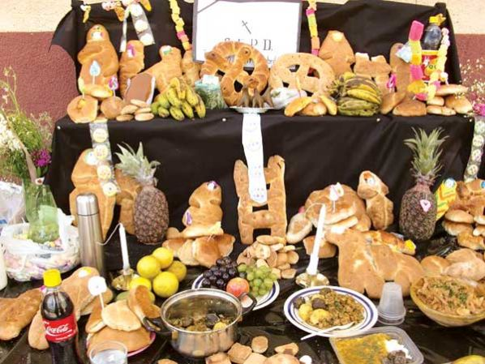

Se preparan comidas como "pique macho", sopas, guisos y otros platos típicos de la región.
Bebidas como chicha y api (maíz morado) acompañan la celebración, especialmente en la región andina.
Se elaboran panes de muerto y masitas, que se colocan en los altares y se comparten entre la familia y los visitantes.
Se realizan eventos donde se comparte comida y bebida, promoviendo la unión familiar y comunitaria.

Contacto: jatq2018@gmail.com
Tel: +591 73061654
© 2025 Halloween vs Todos Santos
© HECHO POR JASEFT ANGEL TAPIA QUISBERT